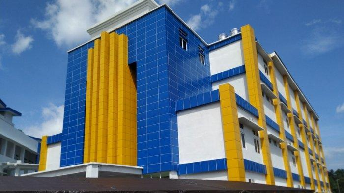
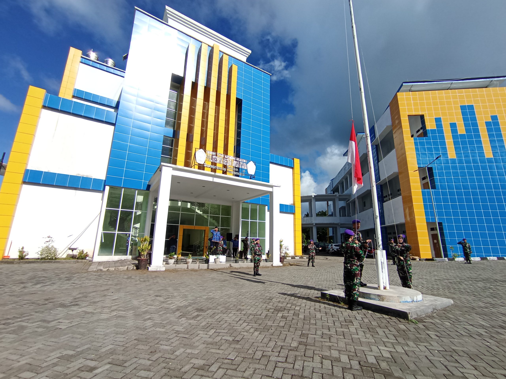

Tentang Kampus
Politeknik Negeri Nusa Utara (POLNUSTAR) adalah perguruan tinggi vokasi yang berfokus pada pendidikan terapan untuk mendukung pembangunan daerah.


Mencetak lulusan siap kerja dan berdaya saing
Politeknik Negeri Nusa Utara (POLNUSTAR) adalah perguruan tinggi vokasi yang berfokus pada pendidikan terapan untuk mendukung pembangunan daerah.